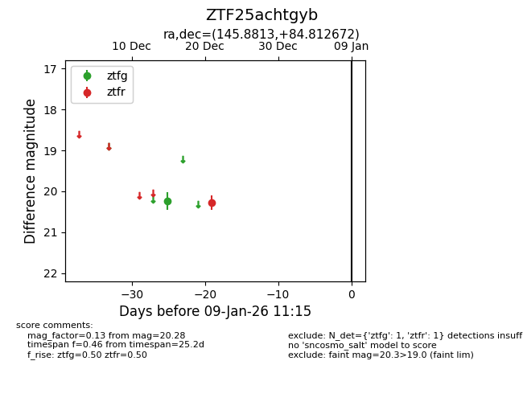
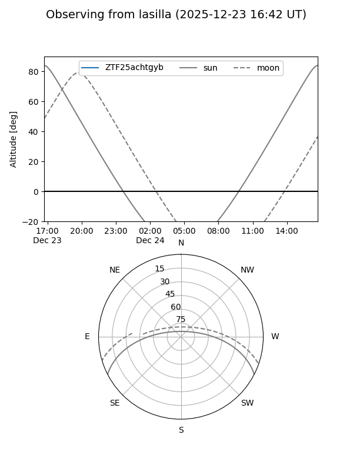

ZTF25achtgyb
Target ZTF25achtgyb at 2025-12-23 09:17
Aliases and brokers:
FINK: fink-portal.org/ZTF25achtgyb
Lasair: lasair-ztf.lsst.ac.uk/objects/ZTF25achtgyb
ALeRCE: alerce.online/object/ZTF25achtgyb
alt names
ZTF25achtgyb (ztf,fink_ztf)
Coordinates:
equatorial (ra, dec) = 145.8813,+84.81267
equatorial (HMS+DMS) = 09:43:31.52,+84:48:45.62
galactic (l, b) = (127.3362,+30.59833)
Flags:
Photometry:
last ztfg=20.23, ztfr=20.28
1 ztfg, 1 ztfr detections
Lightcurve

Visibility


Additional plots